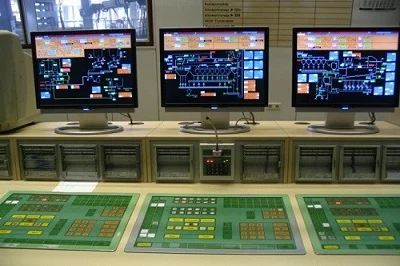

Номер: 174
Назва спеціальності:
Автоматизація, комп’ютерно-інтегровані технології та
робототехніка

Навчаючись за спеціальністю, студенти вивчають алгоритмічні мови
та програмування, комп'ютерну графіку, основи
об’єктно-орієнтованого та системного програмування, системи баз
даних, здійснюють моделювання процесів та елементів систем
керування, вивчають електроніку і мікросхемо техніку, теорію
автоматичного управління. Особлива увага приділяється вивченню
елементів і пристроїв автоматики та систем управління, засобам
збору, передачі і обробки інформації, проектуванню пристроїв і
систем автоматичного управління на базі мікропроцесорних засобів.
Під час навчання студенти набувають вміння з розрахунку,
проектування та експлуатації автоматизованого електроприводу,
цифрових систем автоматики, інформаційно-вимірювальних систем,
систем і мережі передачі даних, засобів автоматики та телемеханіки
тощо. Випускники можуть обіймати посади керівника програмних і
апаратних розробок, адміністратора інформаційних комп’ютерних
систем і мереж, технічного менеджера комп’ютерної фірми,
розробника локальних і цифрових систем, програміста відділу
автоматизованих систем управління (АСУ), інженера з експлуатації
систем автоматизованого керування, діагностики, контролю й обробки
інформації, інженера контрольно-вимірювальних пристроїв і
автоматики (КВПіА), оператора станцій технічного обслуговування з
автоматизованим комп’ютерним моделюванням та керуванням, референта
в галузі обчислювальної техніки в наукових, виробничих,
комерційних і банківських установах різних форм власності. Чому
необхідно зробити вибір саме цієї спеціальності: • Міністерство
освіти і науки України щороку збільшує державне замовлення на
підготовку ІТ-спеціалістів; • наші спеціалісти зможуть успішно
працювати в будь-яких сучасних галузях промисловості, так як вони
теоретично і практично володіють сучасними комп’ютерними
технологіями; • робота завжди буде цікавою, оскільки вона завжди
буде сучасною.